CompassCompliance
Inicia sesion para continuar
El acceso esta restringido a cuentas corporativas de Global66.
El acceso esta restringido a cuentas corporativas de Global66.

Selecciona el segmento, ingresa el ID del cliente y adjunta los documentos recibidos.
Define que consulta se ejecuta sobre la base de datos.
Los documentos son opcionales: puedes ejecutar solo la consulta.
Identificador interno del cliente (customer_id).
Arrastra los archivos o haz clic para seleccionar
PDF, PNG, JPG o WEBP. Varios archivos a la vez.
La base de datos solo es accesible a traves de la VPN corporativa. Conectala para poder ejecutar el analisis.
Por seguridad la sesion se cerro tras 10 minutos sin actividad.